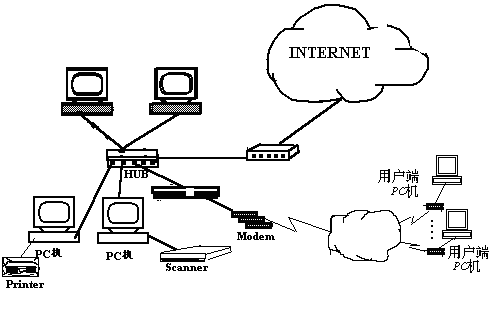

|
|
| 当前位置：电脑报电子版 > 1999 年 > 46 期 > 大众网络 > Internet之门——Internet接入技术 |
| 《 Internet之门——Internet接入技术 》 |
| 大多数用户平常上网都是通过电话线拨号上网，但是，电话线接进了电信局后，在电信局是怎样传输、处理的呢？这个问题我们还得从电话线路的结构原理说起。
电话的原理 现在常用的话机一般是双音频和脉冲两种，使用的线路是金属对绞线，通常称为电话用户线或市话电缆，它的主要功能是传送音频话音信号。双音频和脉冲在拨号时发出的信号不同，脉冲话机拨号时发出的是脉冲个数，如果拨1就发出1个脉冲，以此类推，如果是0就发出10个脉冲，交换机根据脉冲个数来确定用户拨的号码。 
上网原理 我们常用的拨号上网方式与电话的的接入方式基本相同，我们通过计算机拨163或169上网，这些从计算机发出的信息都是数字的，通过Modem转换成模拟信号，然后通过电话线传到程控交换机上（因为电话线只能传输模拟信号），在程控交换机接收前，信号通过模/数转换器把该模拟信号还原成数字信号，交换机通过内部分析程序分析传过来的号码，如果是163或169的信号，交换机就会把该信息转到拨号服务器上，拨号服务器就会给我们的计算机找寻空闲IP地址，然后分配给它，这样这台计算机在网络上就有了一个唯一的标识了，而计算机与拨号服务器之间就建立了一条通路。当另一台计算机（个人计算机或服务器）要与我们通信时，它也通过拨号服务器得到一个IP地址，也就是说，它也与拨号服务器之间建立了通路。通信时，它会给路由器发出指令，指出其通信的计算机的IP地址，路由器就会把信息发给目标计算机所在的路由器，目标计算机所在的路由器会把信息发给目标计算机所连接的拨号服务器，拨号服务器会根据其存储的资料来确定目标计算机的具体地址，以确定具体的通路。这样两台计算机之间就可以通信了。这些数据之间的传送使用PPP协议在路由器间传递。拨号上网用的接入线路也是金属对绞线，即电话用户线，在通常的用户接入半径（95％概率在4Km以内）范围内金属对绞线还可以支持更高的数据率，但交换机的模拟用户线接口（Z接口）限制了这一速率的提高。数字程控交换机本身就具有处理每路64kb/s速率的数字信号能力，只要将交换机的模拟用户接口改为数字用户接口（V接口），网络的数字化就可以延伸到用户终端。在交换机的用户线侧装上线路终端模块（LT），在用户终端的网络侧装上网络终端（NT）模块，金属用户线的传输能力就可以进一步提高，LT和NT起到对数字信号线路编码及支持二线双工数字传输的功能。 今年7月，国内的上网人数达到400万，年底可能达到800万，在所有的上网用户中，拨号上网的用户占80％，所以快速增长的、具有长时间拨号上网用户给公共电话网络造成了严重的负担——数据通信的通信时间很长，造成了线路交换型网络的超负荷。交换机和中继线已没有足够的能力完成通话，经常出现“快速占线”、延迟出现拨号音或没有拨号音等电话网络堵塞情况。 解决电话网络堵塞问题的一种方案就是使信息流直接接到数据通信网，从而彻底摆脱电话网。这种方案可以通过对Internet的信息流进行识别，或者通过xDSL等技术的采用，使得信息流不再通过电话网络来实现。这是一种最彻底的摆脱堵塞的解决方案。随着电信网络不断向个人通信发展，一种完全基于个人通信的系统PCS也可能是一种较好的彻底摆脱拥塞的解决方案。 接入技术的发展趋势 由于光纤无与伦比的传输性能，在各类宽带接入手段中，光接入网（OAN）必将成为主流。根据国际电信联盟（ITU）的定义光接入网由由光线路终端（OLT）、光配线网（ODN）、光网络单元（ONU）及适配功能（AF）组成。根据ONU在接入网的不同位置，可以分为光纤到路边（FTTC），光纤到楼（FTTB）、光纤到办公室（FTTO）及光纤到家（FTTH），其中FTTH是宽带综合业务接入网的最终目标。目前通讯网络的现状仍是以铜线为主，现有的网络业务也未对网络带宽提出很高要求，因此FTTH的实现将是一个逐步演进的过程。21世纪将是一个信息化的时代，一个追求个性崇尚自由的时代；21世纪也将是一个网络化的时代，网络将带给人们丰富的、廉价的、有用的多媒体信息。今天，网络正在向高带宽和接近普通用户这两个方向发展，Internet的发展为人们打开了一个丰富多采的信息资源的大门，正向着信息和娱乐相结合的方向发展。大量的信息对人们的日常生活和工作带来越来越大的影响和帮助，准确而快速的获取自己需要的信息已经是一个现代人必须具备的基本技能。随着生活水平的提高和消费品位个性化的发展，市场交易和个人办公将走进网络，普通家庭的休闲和娱乐也将走上网络。一个全新的工作、生活休闲和消费方式正在向我们走来。 |
| 下载本期推荐软件 | 页 首 |
| 《电脑报》版权所有，电脑报网站编辑部设计制作发布 |